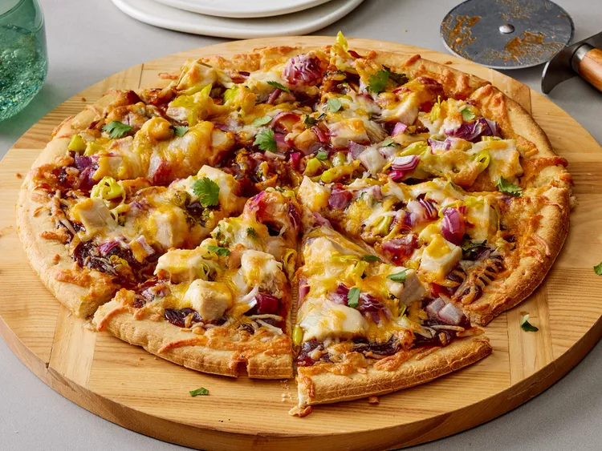

BBQ Chicken Pizza

Back to Home
Description:
This recipe is a simple way to make delicious, homemade BBQ chicken pizza using basic ingredients like pizza dough, BBQ sauce, chicken, and cheese. To prepare it, you just spread the BBQ sauce on the pizza dough, add cooked chicken and cheese, and bake it in the oven until the crust is golden and the cheese is melted. This pizza is packed with flavor and perfect for a satisfying meal.
Ingredients:
- 1 (12 inch) pre-baked pizza crust
- 1 cup spicy barbeque sauce
- 2 skinless boneless chicken breast halves, cooked and cubed
- 1 cup sliced pepperoncini peppers
- 1 cup chopped red onion
- ½ cup chopped fresh cilantro
- 2 cups shredded Colby-Jack cheese
Steps:
- Gather all ingredients. Preheat the oven to 350 degrees F (175 degrees C).
- Place pizza crust on a baking sheet. Spread barbeque sauce on crust.
- Top with chicken, pepperoncini peppers, onion, and cilantro.
- Cover with Colby-Jack cheese.
- Bake in the preheated oven until cheese is melted and bubbly, about 15 minutes.